From Donald's time in the trade
Photos of welding and fabrication work from Donald Drake's time in the trade. Dracon services begin Q3 2027.

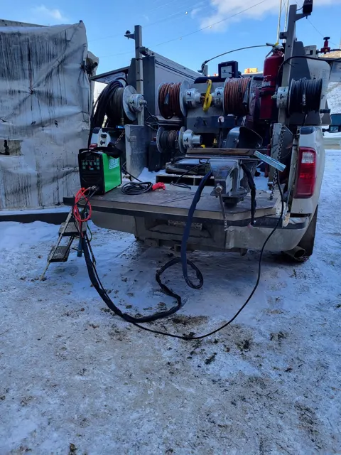

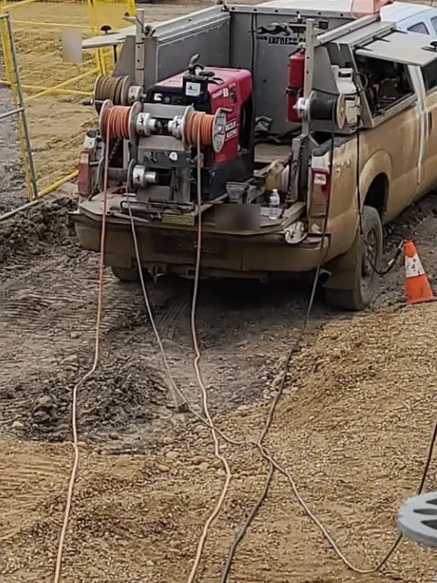

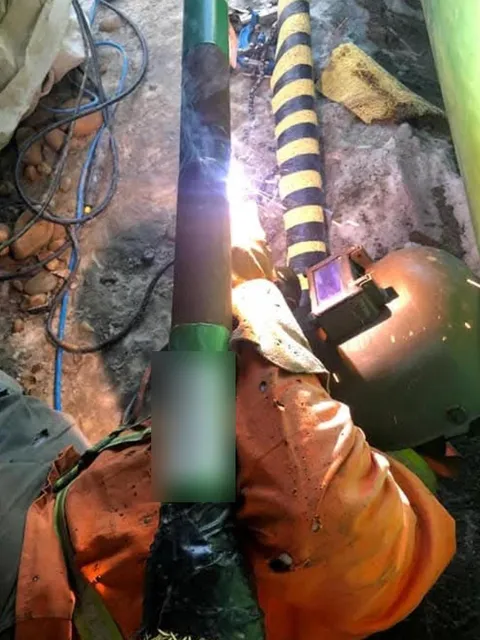

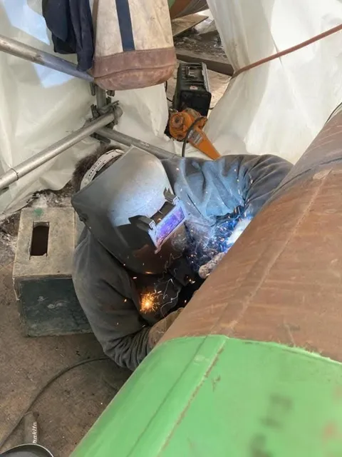

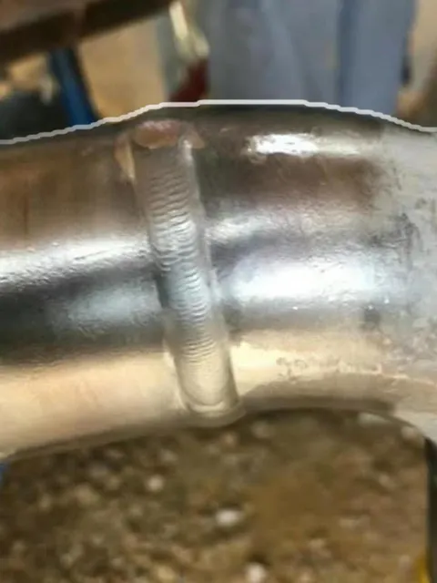

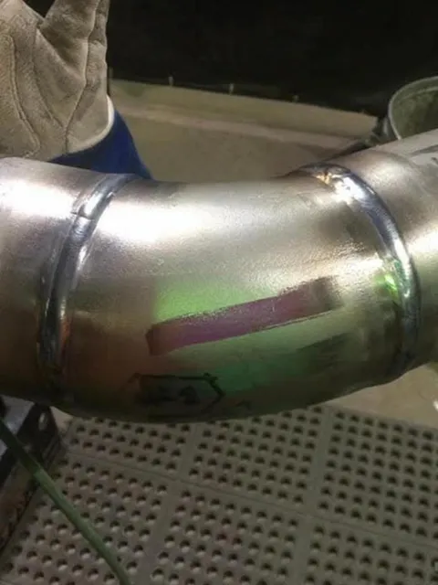

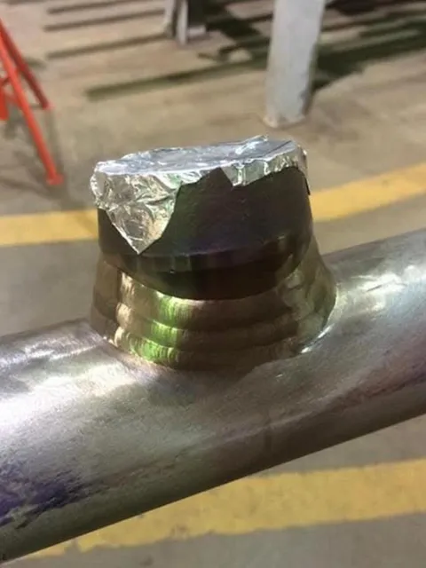

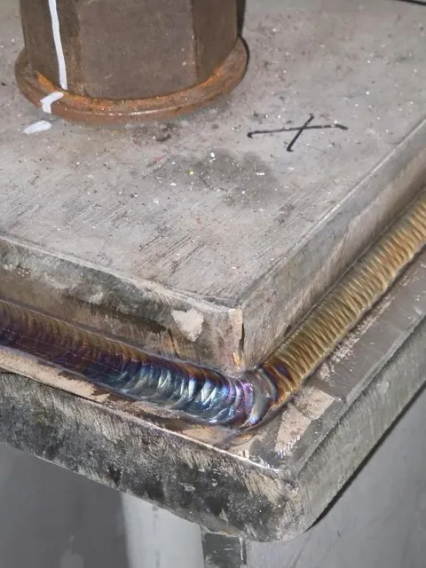

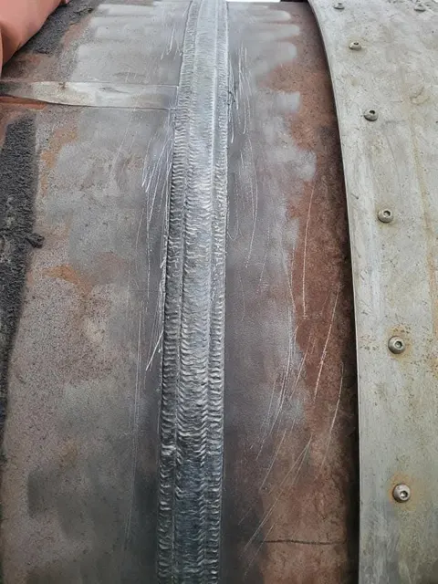

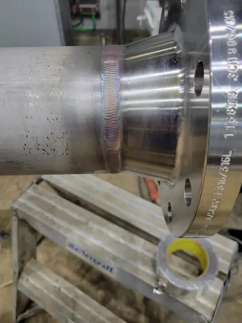

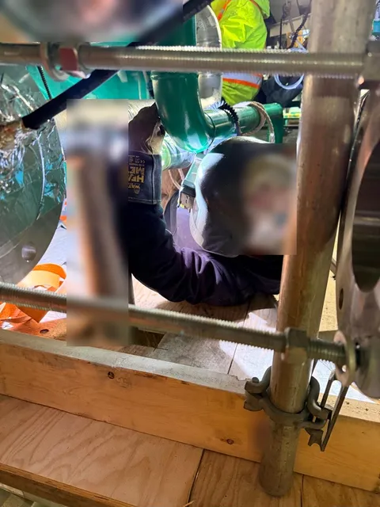

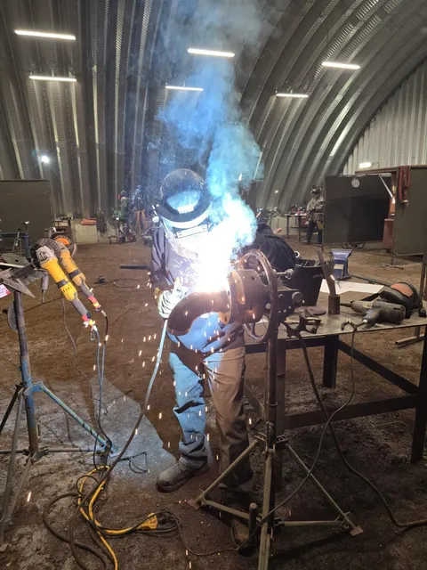

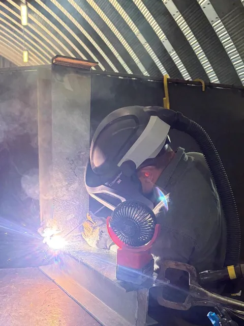

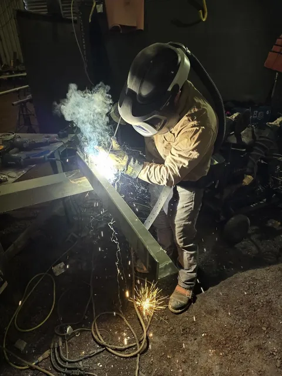

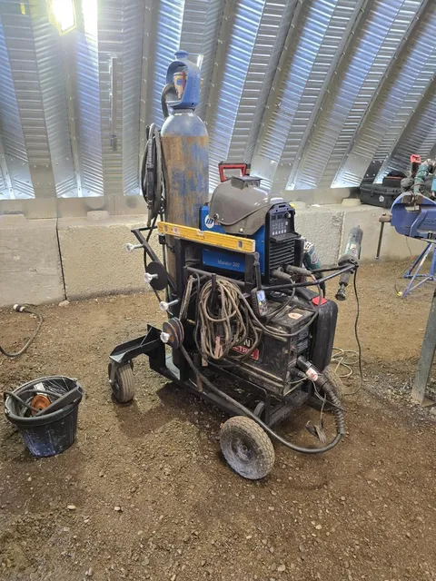

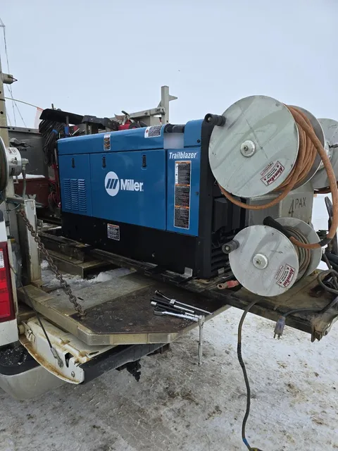

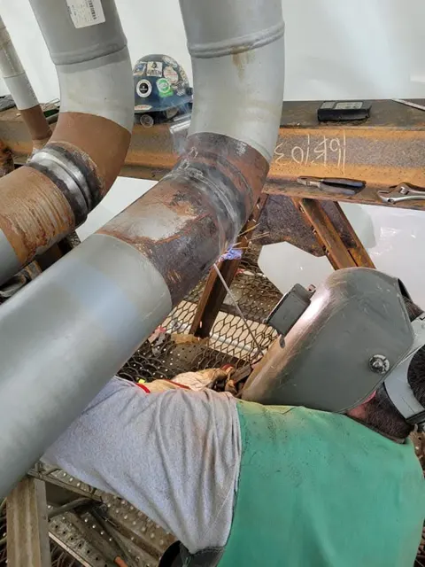

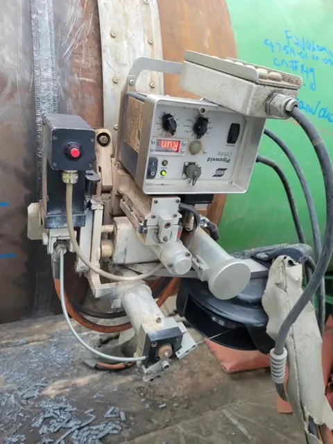

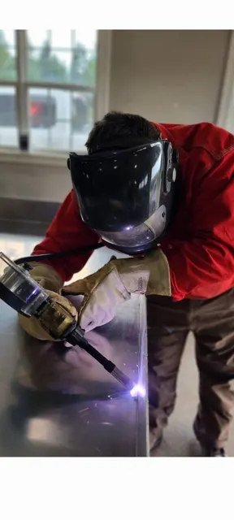

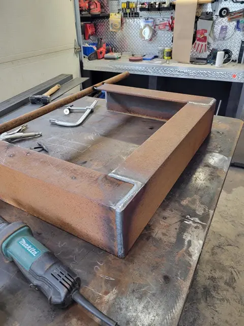

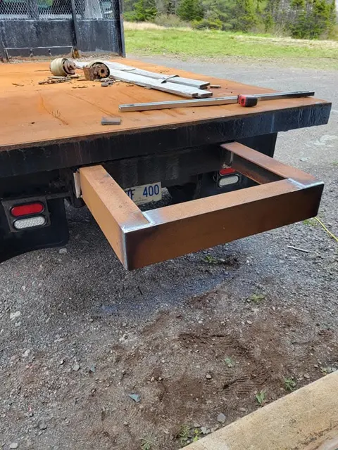

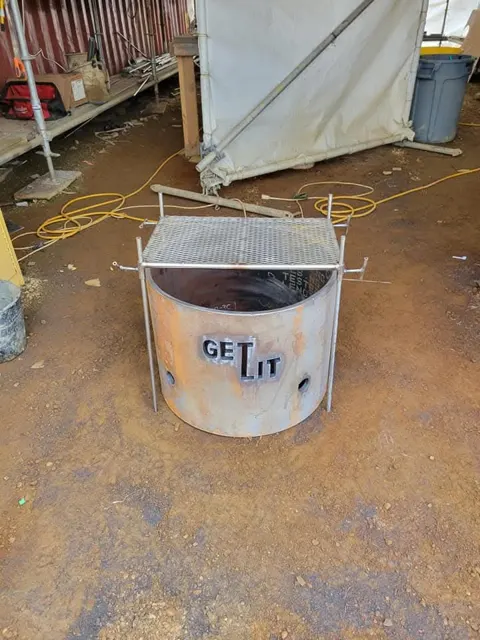


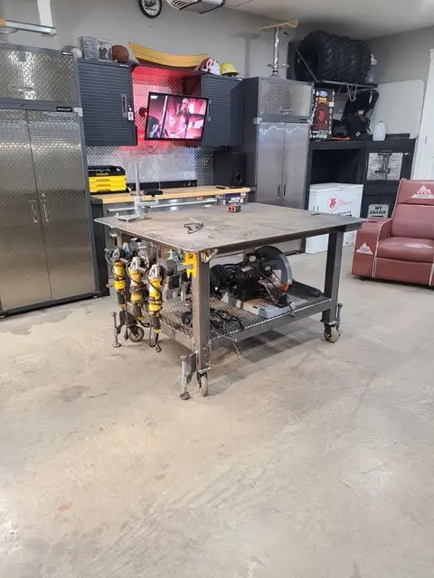
Pipe and pressure work will be done only under a client's own procedures.